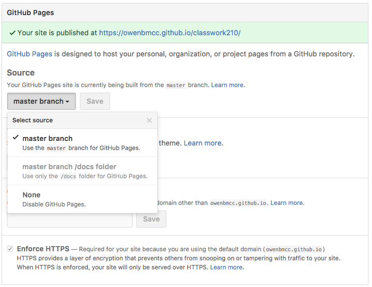

Getting started
Using GitHub as a publishing tool helps us do a few things:
- Learn git! This is a very valuable and marketable tool.
- Collaborate easily.
- Publish simple webpages online for free.
Sign up at GitHub.com

Use an email you can check, you will have to confirm your email.
Create a new repository:


Add a repo name, description and initialize with a README.md

Click upload files to upload your project.
Drag the files inside your main folder unto the GitHub repo.
Your GitHub repo should look exactly like your main folder.
We're going to use GitHub Pages to publish the repo.
Navigate to the Settings tab on the GitHub repo page and scroll down to the to the GitHub Pages section. Click the dropdown under Source and choose the master branch.

Your website will be published at the URL <username>.github.io/<reponame> where your username is you GitHub acount and the repo name is whatever you named your repository.


When you make changes to your site, upload your whole folder contents again. GitHub will be able to see what's new and what isn't and make changes and keep track of those changes.
Remember to always write a new commit message that describes the changes you have made.